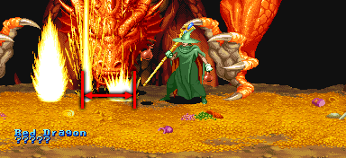

라파엘 동굴의 숨겨진 보스 '레드 드래곤' |
기본 정보
전투 도중 랜덤으로 얻을 수 있는 아이템
클리어 시간 측정의 시작 시점
레드 드래곤의 이름과 HP(???)가 보이는 최단 시간 클리어 기록
파이터/클레릭/시프/매직 유저 4:47 |
|||||||||

| 점수 아이템 : | |
| 반지류 : | |
| 도구류 : |
|
| 완드류 : | |
| 장비류 : | |
이 게임상에서 synn과 함께 가장 거대하며 또한 다른 보스들과 비교를 거부하는 많은 HP를 가지고 있고 공격 하나하나가 무척 뼈아프다. 특히 브레쓰의 경우 드래곤의 방패가 없으면 단 한방에 즉사하기 때문에 상대법을 모르면 무척 위험하다.
대신 마지막 보스인 synn보다도 더 많은 xp를 주며 다이아몬드와 500sp 여러다발을 주기도 하는데다가 드워프와 엘프를 제외하면 레벨을 1씩 더 올릴 수 있기 때문에 일부러라도 만나서 물리치면 여러모로 좋다. 많은 HP와는 달리 쉽게 금방 물리치는 방법도 존재하기 때문에 의외로 난이도가 쉬운 면도 있다. 전작 TOD에 비하면 많이 약해진 보스라 할 수 있다.
"살고 싶다면 당장 떠나라." - No를 선택
"더 이상 접근한다면 나는 네놈들을 산산조각 낼 것이다. 가능할 때 도망가라." - No를 선택
"어리석은 것들. 정말로 파멸을 원하는가?" - Yes를 선택
"그렇다면 내 친히 너희들을 산산조각 내주마!"
이후에 레드 드래곤의 브레쓰가 바로 날아오니 오른쪽 화면 반대편까지 열심히 달려야 살 수 있다.
"당장 돌아가라"
3번의 대화에서 각각 Yes / Yes / No 를 선택했을 경우 더 이상 진행 할 수 없으며 나가야 한다.
드래곤 슬레이어, 뱀의 지팡이는 무기로써의 가치가 많이 떨어져서 별 쓸모가 없고 마력의 지팡이는 비교적 쓸모는 있지만 디스플레이서 망토를 버려야 하니 역시 굳이 얻어야 할 필요는 없다.
대신 교환 받은 무기를 상점에 팔면 많은 sp를 받으니 (드래곤 슬레이어/마력의 지팡이 1600sp, 뱀의 지팡이 1200sp) 돈을 모아야 할 필요가 있을 때 줍도록 한다. 아니면 2인 이상 플레이 시 디스플레이서 망토가 없는 플레이어가 줏어서 교환 받아도 무방하다. 특히 매직 유저가 둘 이라면 얻어볼 만 하다.
| ※ 붉은색은 파이터가 입는 데미지, 푸른색은 매직 유저가 입는 데미지. 클레릭/드워프는 파이터에 가까운 데미지를, 시프/엘프는 매직 유저에 가까운 데미지를 입는다. |
|||||||||||||||||
| 손바닥 치기 (43/64) | |||||||||||||||||
| 순간 손을 가로로 휘두르는데 빠르기 때문에 위험하다. 또한 브레쓰를 제외하면 가장 뼈 아픈 공격이다. 다른 공격을 피할 때 날아오기도 하고 빈틈이 많은 공격을 할 때 뒤에서 날아올 수도 있기 때문에 가장 조심해야 할 공격이다. 얼른 파악을 했다면 위나 아래로 이동해서 피하고 늦게 파악을 했다면 파이터나 드워프는 A+B, 시프나 매직 유저는 백스텝, 클레릭이나 엘프는 빈 주문칸(D키)으로 피할 수 있는데 클레릭/엘프는 빈 주문칸을 준비하지 못한 상황이 많을테니 미리 파악해서 위 아래로 피하는게 좋다. 시프, 엘프는 2대 맞으면 거의 빈사상태가 되며 매직 유저는 그대로 사망이니 이 셋은 특히 주의하도록 한다. |
|||||||||||||||||
| 불기둥 (40/60) | |||||||||||||||||
 |
손에서 불을 발사 하는데 지면에 닿으면 불기둥을 생성해서 화면 중앙으로 퍼져나간다. 한손에서 발사하는 경우도 있고 양손에서 발사 하는 경우도 있는데 한손에서 발사 할 때는 반대편으로 피하면 되지만 양손에서 발사 한다면 불이 바닥에 닿기 전에 화면 구석으로 피해야 하니 재빨리 움직여야 한다. 그리고 연속으로 발사하는 경우도 많다는 점도 주의해야 한다. 손바닥 치기 만큼이나 아픈 공격이기 때문에 역시 맞지 않도록 한다. 불 내성의 반지가 있다면 무시해도 된다. 다만 피하는 도중에 손바닥 치기가 날아올 수도 있다는 점은 주의. 드래곤의 방패로 막을 수 있다. 물론 그것때문에 디스플레이서 망토를 버리고 방패를 가져오는 것은 무척 비효율적이다. |
||||||||||||||||
| 물기 (54/54) | |||||||||||||||||
| 말 그대로 플레이어 캐릭터를 물어버린다. 물기 전에 입을 벌리며 머리를 약간 위쪽으로 드는 모션을 보여주기 때문에 이런 모션이 보인다면 재빨리 슬라이딩으로 멀리 벗어나야 한다. 레버나 방향키를 좌우로 재빠르게 흔들면 데미지를 덜 입고 빨리 풀려날 수 있다. 실제 상황이라면 플레이어 캐릭터의 몸체가 두동강 날 법 하겠지만 다행이랄지 이 게임이 18금이 아니라서 데미지만 입고 끝난다. |
|||||||||||||||||
| 낙석 (32/47) | |||||||||||||||||
| 순간 화면 위로 사라진 후 바위를 무수히 떨어뜨린다. 맞으면 역시 아프긴 한데 그림자를 보고 피할 수 있다. 그런데 떨어지는 위치가 완전히 무작위라 좀 위험하고 스테이지 맨위로 올라가면 안전하게 피할 수 있으니 레드 드래곤이 올라갔다 싶으면 바로 맨 위로 올라가도록 한다. 간혹 바위가 한 자리에 여러개 중첩되서 떨어지는 경우가 있다. 이걸 맞으면 바위 갯수만큼 데미지가 더해져서 재수 없으면 한방에 죽는 수도 있다. |
|||||||||||||||||
| ★ 화염 브레쓰 (HP와 상관없이 한방에 즉사) | |||||||||||||||||
| 세가지 형태의 화염 브레쓰를 내뿜는다. 맞는 즉시 HP가 몇이든 상관없이 그대로 즉사하므로 그자체만 놓고 보면 아주 위험한 공격이다. 불 내성의 반지도 통하지 않으며 그동안 D키를 전혀 쓸 수 없기 때문에 매직 유저의 D → B → D → B 같은 것도 전혀 통하지 않는다. 일반 적으로 D키를 쓸 수 없지만 클레릭이 턴 언데드를 시전하면 D키를 쓸 수 있다. 그리고 드래곤의 방패가 있다면 전체 HP의 50%의 피해를 줄일 수 있다. 한번까지는 살 수 있다는 뜻이다. 그러나 그걸 바라고 드래곤의 방패를 가져오는 건 아무런 이득이 될게 없으며 또한 맞아보면 알겠지만 맞은 후 일어나자 마자 또 맞을 가능성이 높다. 전작 TOD에선 파이터나 드워프의 경우 한번 정도는 맞아도 버틸 수 있었던 것에 비하면 그 파괴력이 더욱 강해졌다 할 수 있다. 총 2번의 브레쓰를 내뿜는데 각각 HP의 50%, 75%가 줄었을 때 내뿜는다. 각각의 브레쓰를 내뿜는 상황의 HP바를 보면 아래와 같다. (물론 두줄이 넘으면 ???로 표시되지만 좀 더 알기 쉽게 보여주기 위해 HP바로 표시 했다.) 1차 브레쓰
2차 브레쓰
브레쓰의 각각의 특성은 아래와 같다. |
|||||||||||||||||
| 브레쓰 1 | |||||||||||||||||
| 평상시의 위치에서 공기를 빨아 들였다가 브레쓰를 내뿜는다. 공기를 빨아 들일 때 플레이어 캐릭터도 화면 중심으로 빨려 들어가기 때문에 재빨리 대쉬나 슬라이딩으로 빠져나와야 한다. | |||||||||||||||||
| 브레쓰 2 | |||||||||||||||||
| 화면에서 사라진 후 화면 왼쪽이나 오른쪽에서 공기를 빨아 들였다가 브레쓰를 내뿜는다. 빨아들이는 쪽으로 플레이어 캐릭터도 빨려 들어가는데 그쪽으로 슬라이딩이나 대쉬로 재빨리 이동하도록 한다. 방향 판단을 잘못해서 반대편으로 이동하면 끝장이니 주의. 화면 가장 자리가 안전지대다. 브레쓰가 끝나면 스테이지 맨 위에서 나타난다. |
|||||||||||||||||
| 브레쓰 3 | |||||||||||||||||
| 화면에서 사라진 후 배경의 먼 곳에서 머리를 내밀고 브레쓰를 내뿜는다. 화면전체에 브레쓰가 가득 차지만 스테이지 좌우에 하나씩 있는 툭 튀어나온 바위 뒤로 가면 피할 수 있다. ※ 이 브레쓰는 드래곤의 방패가 있어도 한방에 즉사한다. 브레쓰가 끝나면 스테이지 맨 아래에서 나타난다. |
|||||||||||||||||
화살표가 가리키는 바위 뒤에 숨으면 된다. 물론 오른쪽의 바위도 가능하다. |
|||||||||||||||||
| 점프(???) | |||||||||||||||||
| 점프라고 보긴 뭣 하지만 하여튼 때때로 화면 위로 솟구치면서 꼬리를 보여줄 때가 있다. 딱히 위험한 요소가 있는 패턴은 아니지만 솟구치는 시간이 긴 경우가 많기 때문에 시간을 잡아먹는 요소가 된다. 화면의 양끝에 있을 때 특히 자주 볼 수 있다. |
|||||||||||||||||
그리고 맞은 후 움직임을 회복하는 시간이 더딘 편이다. 무슨 말인가 하면 한대 맞은 후 멈춰있는 시간이 조금 길다는 뜻이다. 이 말은 속도가 빠른 공격을 퍼부으면 계속 두둘겨 맞기만 한다는 것을 뜻하며 다시 말하면 '무한 공격'이 가능하다.
혼자서 무한 공격을 할 수 있는 클래스는 파이터, 매직 유저, 엘프 이며 다른 클래스는 2인 이상이서 타이밍을 맞춰서 공격하면 된다. 하나의 공략법 이라고 생각해도 된다.
* 영상 정보 - 플레이어 : legon *
◎ LB오일을 이용한 방법
| 타이밍만 놓치지 않으면 확실하게 레드 드래곤을 끝낼 수 있는 가장 효율적인 방법이므로 가장 많이 사용된다. 꼭 익혀야 할 방법이다. |
레드 드래곤의 머리가 바닥과 거의 붙었을 때 LB오일을 투척하면 보통의 경우보다 훨씬 많은 데미지를 입힐 수 있다. 낙석을 일으키기 위해 올라갔다가 내려 올 때 바닥과 아주 가깝게 붙으며 이때 LB오일이 명중한다면 평상시보다 몇대의 데미지가 들어간다.
* 물기 위해 머리를 처박을 때도 가능하지만 타이밍을 잡기가 워낙 힘들다.
| 0.0초 | |
| 0.397초 | |
| 0.419초 | |
그런데 보다시피 바닥과 가까운 시간이 0.1초도 안될 정도로 순간이다. 그래서 보고 던지는건 불가능에 가까우며 약간 빠르게 먼저 던져둬야 안정적으로 명중시킬 수 있다. 클래스에 따라 던지는 속도가 다르니 각각 연습을 좀 해봐야 할 것이다.

던지는 위치는 머리에 불꽃 두개가 걸칠 정도면 된다. 생각보다 넓지 않으니 잘 자리 잡아야 한다.쉽게 정리하면 "레드 드래곤이 낙석을 일으키기 위해 올라갔다가 내려올 때 위 그림과 같은 타이밍에 맞춰서 레드 드래곤의 머리에 불꽃 2발이 맞도록 LB오일을 던지면 된다". 글로는 잘 이해가 안될 수 있으니 각 클래스별 공략을 참고하기 바란다.
파이어 로드가 있다면 LB오일 9개로 1510~1610 정도의 데미지를, 없다면 890~990정도의 데미지를 입힐 수 있는데 데미지 공식은 대략 아래와 같다.
일단 파이어 로드가 없다면 1히트당 데미지는 평균 16, 있다면 1히트당 데미지는 평균 26
LB오일 홀수번째 : 첫번째 불꽃 3히트 → 두번째 불꽃 3히트 (불꽃 한개당 3히트가 되서 총 6히트)
LB오일 짝수번째 : 첫번째 불꽃 4히트 → 두번째 불꽃 4히트 (불꽃 한개당 4히트가 되서 총 8히트)
따라서 (3히트-3히트) - (4히트-4히트)가 LB오일을 던지는 동안 반복되는데 LB오일의 최대 소지갯수는 9개 이므로 (3히트-3히트)는 5번, (4히트-4히트)는 4번 이루어 진다.
이것을 맨위의 데미지를 대입시켜서 1인 플레이시 9개로 뽑을 수 있는 데미지를 보면
파이어 로드가 없을 경우 {(3히트-3히트) x 5 + (4히트-4히트) x 4} x 16 = 약 992
파이어 로드가 있을 경우 {(3히트-3히트) x 5 + (4히트-4히트) x 4} x 26 = 약 1612
그러나 첫번째 LB오일은 제대로 히트가 안 이루어지는 경우가 많아서 실제로는 데미지가 더 감소한다.
이해하기 쉽게 이야기 하면 1인 플레이시 레드 드래곤의 HP는 1316이니 파이어 로드가 없다면 9개로 끝낼 수 없고 파이어 로드가 있다면 8~9개로 끝낼 수 있다는 뜻이다.
1~4인 플레이시 필요한 대략적인 LB오일의 갯수를 말하자면 아래와 같다.
| 1인 | 2인 | 3인 | 4인 | |
| 파이어 로드가 없을 경우 | 13개 | 15개 | 16개 | 17개 |
| 파이어 로드가 있을 경우 | 8개 | 9개 | 9개 | 10개 |
다른 경우는 문제가 안되는데 1인 플레이시 파이어 로드가 없다면 LB오일 9개로 깔끔하게 끝나지가 않는다. 레드 드래곤의 HP 1316 - (890~990) = 326~426......그러니까 평균 386정도의 데미지를 더 입혀야 하는데 이를 실제 HP바로 나타내면 아래와 같다.
파이어 로드가 없다면 이정도의 데미지를 입히고 LB오일을 던지면 끝낼 수 있다는 뜻이다.
◎ 라이트닝 볼트를 이용한 방법
레드 드래곤에게 어떤 공격이든지 빠르게 4히트를 성공시키면 4히트째에 얼굴을 찡그리는데 이 4히트 째를 라이트닝 볼트로 명중시키면 평상시의 수십배의 데미지가 나오게 된다. 일명 '라크리'라 불리는 현상이다.
이론은 간단하다. 3히트 후 라이트닝 볼트(반지포함)를 명중시키면 된다.
그런데 3히트가 되기 전에 레드 드래곤이 다른 행동으로 넘어가면 히트수가 초기화 되기 때문에 재빨리 3히트를 넣지 않으면 실패할 확률이 높다. 따라서 재빨리 3히트를 넣는 방법이 필요한데 각 클래스별 확률 높은 방법은 클래스별 공략에서 알아보기로 하고 데미지에 대해 알아보자.
★ 파이터 / 클레릭 / 시프
보통 이 시점의 파이터/클레릭은 17레벨이고 시프는 18레벨로 이때의 라이트닝 볼트(반지)의 데미지는 36이다. 그리고 크리티컬을 성립시켰을 경우 12배로 늘어난다.
따라서 기본적으로 36 x 12 = 432 가량의 데미지가 나온다.
그리고 라이트닝 로드가 있을 경우 1.9~2배 가량 증가하고 이어링이 있을 경우 2~2.1배 가량 증가, 둘다 있다면 3.1~3.2배 가량 증가한다. 정리해보면라이트닝 로드가 있을 경우는 432 x 1.9~2 = 820 ~ 864 정도의 데미지가 나오며
이어링이 있을 경우 432 x 2~2.1 = 864 ~ 907 정도의 데미지가 나오며
둘 다 있을 경우 432 x 3.1~3.2 = 1339 ~ 1382 정도의 데미지가 나온다.
★ 매직 유저
이 시점의 매직 유저는 18레벨로 라이트닝 볼트(반지 포함)의 데미지는 36이다. 그러나 증가율은 약간 다른데 라이트닝 볼트의 경우 14배, 반지의 경우 12배이다
따라서 기본적으로 라이트닝 볼트는 36 x 14 = 504 가량의 데미지가 나오며
반지의 경우 36 x 12 = 432 가량의 데미지가 나온다.
라이트닝 볼트의 경우
라이트닝 로드가 있을 경우는 504 x 2 = 1008 정도의 데미지가 나오며
이어링이 있을 경우 504 x 1.8~1.9 = 907 ~ 957 정도의 데미지가 나오며
둘 다 있을 경우 HP에 상관없이 무조건 즉사 한다.
라이트닝 로드가 있을 경우는 432 x 1.8~1.9 = 777 ~ 820 정도의 데미지가 나오며
이어링이 있을 경우 432 x 2~2.1 = 864 ~ 907 정도의 데미지가 나오며
둘 다 있을 경우 432 x 3.1~3.2 = 1339 ~ 1382 정도의 데미지가 나온다.
★ 드워프
이 시점의 드워프는 12레벨로 이때의 라이트닝 볼트(반지)의 데미지는 30이다. 그리고 크리티컬을 성립시켰을 경우 13배로 늘어난다.
따라서 기본적으로 30 x 13 = 390 가량의 데미지가 나온다.
그리고 라이트닝 로드가 있을 경우 2배 가량 증가하고 이어링이 있을 경우 2.5배 가량 증가, 둘다 있다면 2.7배 가량 증가한다. 정리해보면라이트닝 로드가 있을 경우는 390 x 2 = 780 정도의 데미지가 나오며
이어링이 있을 경우 390 x 2.5 = 975 정도의 데미지가 나오며
둘 다 있을 경우 390 x 2.7 = 1053 정도의 데미지가 나온다.
★ 엘프
이 시점의 엘프는 10레벨로 라이트닝 볼트(반지 포함)의 데미지는 26이다. 그러나 증가율이 다른 클래스와 차원이 다른데 라이트닝 볼트는 무려 26.5배에 이른다(반지는 12배). 캡콤에 엘프를 사랑하는 개발진이라도 있었는지 당최 무슨 생각으로 이런식의 증가율을 정했는지는 모르겠는데 하여튼 엄청난 특혜라고 할 수 있다.
어쨌거나 기본적으로 라이트닝 볼트는 26 x 26.5 = 689 가량의 데미지가 나오며
반지의 경우 26 x 12 = 312 가량의 데미지가 나온다.
라이트닝 로드가 있을 경우는 312 x 2~2.1 = 624 ~ 665 정도의 데미지가 나오며
이어링이 있을 경우 312 x 2.7 = 842 정도의 데미지가 나오며
둘 다 있을 경우도 312 x 2.7 = 842 정도의 데미지가 나온다.
그런데 문제가 있다면 재빨리 3히트를 넣는 방법이 비교적 불안정하기 때문에 실패 할 확률이 역시나 많이 높다는 점이다.
간단히 정리 해보면 파이터/클레릭/시프는 라이트닝 로드와 이어링이 있어야 즉사 시킬 수 있는데 장비를 제대로 못갖춘 경우도 많고 특히 클레릭/시프는 반지가 부족한 경우가 많다. 게다가 성공률도 좋지 못하다.
드워프는 낮은 레벨로 인해 기본 데미지가 워낙에 약하고 또한 마찬가지로 반지가 부족한 경우도 많고 장비를 제대로 못갖춘 경우도 많으며 성공률도 좋지 못하다는 약점을 가지고 있다.
매직 유저/엘프는 다른 클래스에 비하면 장비도 갖추기 쉽고 위력도 강력하다. 그러나 매직 유저는 성공률이 높은 방법을 보유한 반면 엘프는 그렇지 못하다.
한마디로 라이트닝 크리티컬은 매직 유저를 제외하면 성공률이 많이 낮고 매직 유저/엘프를 제외하면 장비 갖추기도 쉽지 않아서 효율성이 많이 떨어진다. 그래서 매직 유저를 제외한 다른 클래스는 괜히 시도하다가 반지나 라이트닝 볼트를 죄다 날리고 짜증내느니 성공률 높은 오일 크리티컬을 시도하는 것을 권장하는 바이다. 물론 하거나 말거나는 플레이어의 자유다.
◎ 두가지를 혼합한 방법
LB오일을 던질 경우 히트수가 딱 맞아 떨어지는지 바로 이어서 라이트닝 볼트를 시전하면 크리티컬이 성립한다. LB오일 크리티컬이 나오는 도중에 라이트닝 볼트 크리티컬까지 더해진다는 뜻이다.
LB오일 바로 뒷칸에 반지가 위치하도록 맞춰놓고 레드 드래곤이 낙석을 일으키고 내려올 때 LB오일을 5개 이상 던지고 바로 반지로 바꿔서 시전하면 된다.
파이어 로드가 없는 경우 조금이라도 더 빠르게 끝내고 싶을 때 이용 해 봄직한 방법이다.
무엇보다 라이트닝 크리티컬 보다 성공률이 훨씬 높다는 장점이 있다.